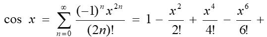

<!DOCTYPE html>
<html lang="en">
  <head>
    <meta charset="UTF-8" />
    <meta name="viewport" content="width=device-width, initial-scale=1.0" />
    <title> Кобельчук А.И.</title>
   <style>
   .style1 {
       margin-left: 38%; 
       margin-right: 38%;      
       display: block;   
       padding: 0.8%;
       line-height: 60%;   
   }      
  </style>
  </head>
  <body>
    <script>
      "use strict"; 
      let x = prompt("Введите x:");
      let accuracy = prompt("Введите точность вычисления фунцкии:");
      let n = 1;
      let sum = 1;

        do{
            sum += calc(x,n);
            n++;
        }while(accuracy < Math.abs(Math.cos(x) - sum))

      document.write('<div class="style1">');
      document.write('<p>');
      document.write("Значение функции с помощью разложения: <p>" + sum + "<p>");
      document.write("Значение функции: " + Math.cos(x) + "<p>");

        function calc(x,n){
          let num = Math.pow(-1, n)*Math.pow(x,2*n)/factorial(2*n);
            return num;
        }
        function factorial(num){
            if(num === 1){
                return 1;
            }
            return num * factorial(num-1);
        }
    </script>
  </body>
</html>